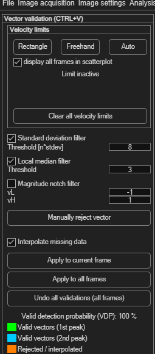
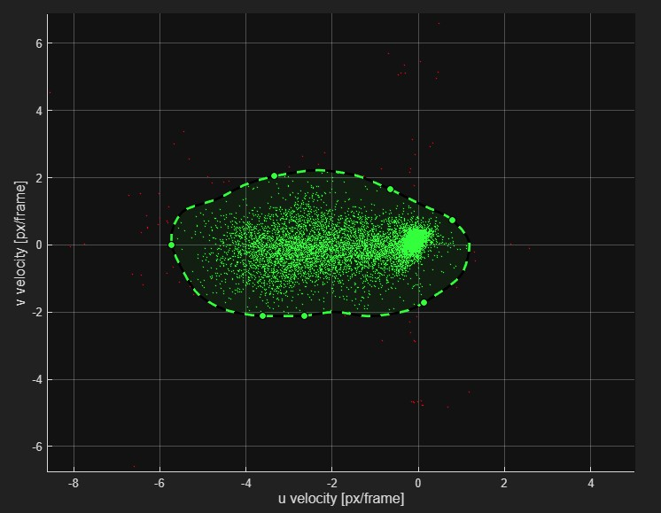
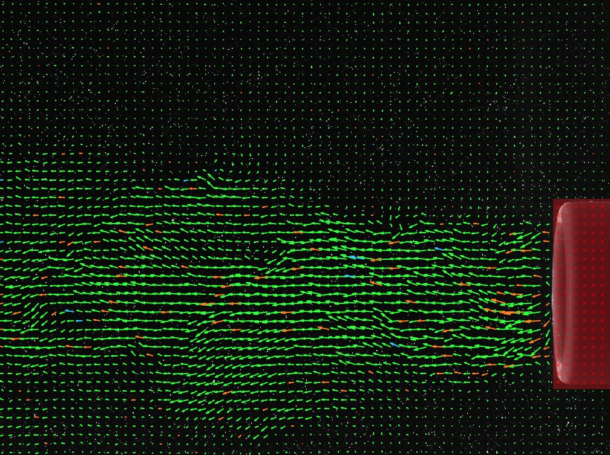

Velocity-based validation
After an analysis, some vectors will be wrong — spurious correlations, noise, or outliers. This panel finds and removes them using statistical filters, a velocity-space limit you draw yourself, and manual clicking, then optionally fills the gaps by interpolation.
Open via Validation → Velocity based validation (Ctrl+V).

Velocity limits
Click Rectangle, Freehand or Auto to open a scatter plot of every vector's u vs. v component (not its position in the image — its value in velocity space). Valid vectors cluster together; outliers sit far from the cluster.
| Button | How you define the limit |
|---|---|
| Rectangle | Draw a rectangular window around the allowed velocities. |
| Freehand | Freely draw any shape around the allowed velocities. |
| Auto | PIVlab automatically draws a shape around the main cluster. |
Any vector falling outside the shape you defined is treated as invalid. The display all frames in scatterplot checkbox (on by default) pools every frame's vectors into one scatter plot, which usually gives a clearer picture of the true cluster than a single frame would. Click Clear all velocity limits to remove the limit and start over.

Statistical filters
| Filter | Parameter | What it does |
|---|---|---|
| Standard deviation filter | Threshold [n × stdev] (default 4.7) | Removes vectors outside the mean velocity ± n times the standard deviation. |
| Local median filter | Threshold (default 3) | The normalized local median test (Westerweel & Scarano, 2005) — compares each vector to its immediate neighbours rather than the whole field, catching localized outliers a global filter would miss. |
| Magnitude notch filter | vL / vH (default −1 / 1) | Discards velocities that fall inside the range from vL to vH — the opposite of the other filters, useful for rejecting a specific unwanted velocity band (e.g. near-zero noise). |
Both the standard-deviation and local-median filters are enabled by default; the notch filter is off by default.
Manually rejecting vectors
Click Manually reject vector, then click the base of any vector in the plot to discard it individually — useful for the odd bad vector the automatic filters don't catch.
Filling the gaps
Interpolate missing data (on by default) fills rejected/missing vectors by interpolating from their neighbours. Interpolated vectors are drawn in orange in the plot, so you can always tell real data from filled-in data.
Tuning strategy: isolate, then combine
With several filters available, it's easy to end up with a combination that "looks right" without actually knowing which filter is doing what. A more reliable approach:
- Tune one filter at a time — disable the others while you do.
- Check that this filter, on its own, only removes vectors that are actually bad. If it's also eating good vectors, its threshold is too aggressive.
- Step through a few different frames while checking — a threshold tuned on one frame doesn't always hold up across the rest of your dataset.
- Once each filter is individually tuned, enable them all together.
Applying and undoing
- Set up your limits and filters (see Tuning strategy above).
- Click Apply to current frame to test on one frame, or Apply to all frames to validate the whole session.
- Click Undo all validations (all frames) to remove every filter's effect and start over.
Reading the result
After validating, the panel shows the Valid detection probability (VDP) — the percentage of vectors that passed validation unmodified. As a rule of thumb, a VDP above 90% in the area you actually care about is fine — don't worry about a lower overall VDP if it's being dragged down by a region outside your area of interest (e.g. a masked object or the image border). The vector plot uses a color code:
| Color | Meaning |
|---|---|
| Green | Valid vectors (1st correlation peak) |
| Cyan | Valid vectors (2nd correlation peak) |
| Orange | Rejected / interpolated |
